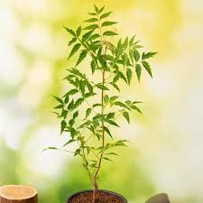

Neem Plant
Scientific Name: Azadirachta Indica
It is up to 100 feet tall. Stem of a neem tree can grow up to a diameter of 2.5 to 3 m. The bark is rough and can be pale or greyish-black in color. Neem tree bears small white colored flowers and star shaped, with a pleasant smell. The tree generally bears fruits between the age of 3 and 5, and the fruits are edible. Neem is probably native to INDIA globally distributed in the Indian subcontinent. Within India, it is commonly found throughout the greater part, and is often cultivated. In Karnataka, in large quantity found in Sandur, Devarayandurga Karpakkapalli.
Benefits of Neem
- Increases Immunity
- Improves digestion
- Blood Purification
- Relief on eye trouble
- Anti-Septic
- Regulates blood sugar
- Relieves pain and inflammation
- Beneficial for Skin, Hair, Dental Health
How to Plant Neem?
To grow a neem plant at home, you can buy seed or young sapling, plant them in a well-draining soil mix. Ensure ample sunlight exposure, water regularly but only when the top inch of soil is dry, and prune occasionally to maintain size and shape; neem plants thrive in warm climates and require minimal fertilization, making them relatively easy to care for at home.
Soil: Use a well-draining potting mix with equal parts garden soil, compost, and sand.
Sunlight: Place your neem plant in a spot with full sunlight for at least 6-8 hours daily.
Watering: Water only when the top inch of soil feels dry to avoid overwatering.
Potting: Choose a pot with drainage holes and a size appropriate for your plant.
Fertilizer: Minimal fertilization is needed, but you can use a balanced organic fertilizer every few months.
Pruning: Regularly prune to maintain size and encourage bushy growth.